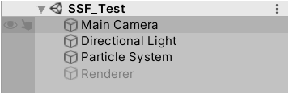
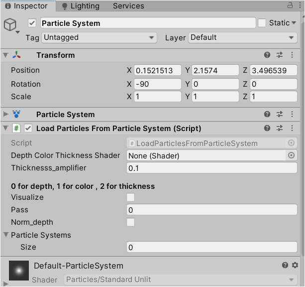
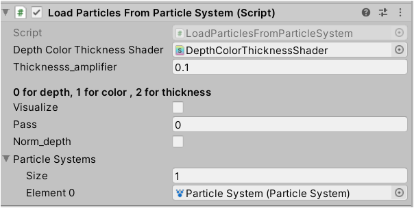
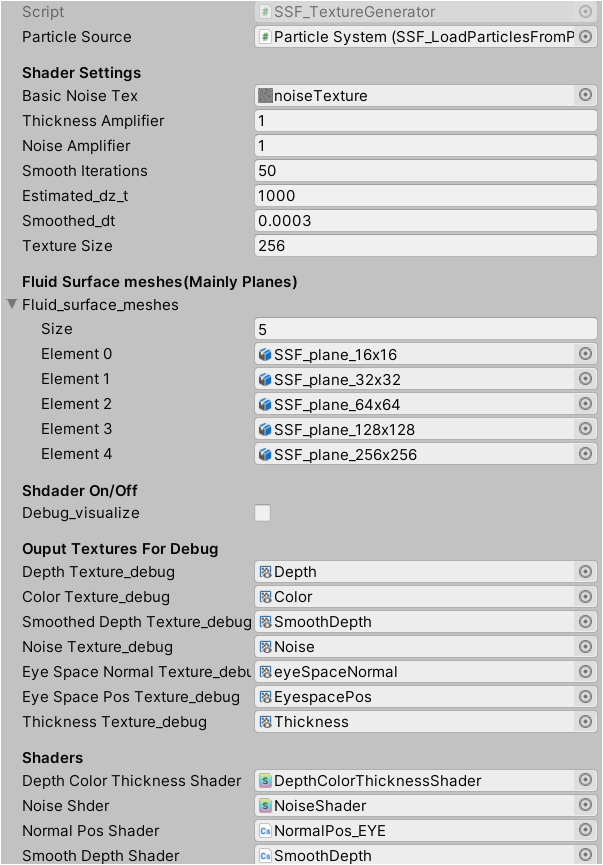
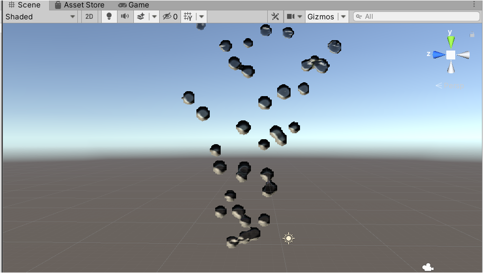

Step By Step Usage¶
Setup Scene¶
Create an empty Scene named
SSF_TestCreate a ParticleSystem and deactivate its
RendererfunctionCreate an empty Object named
Renderer
The Inspector should looks like:
Configure ParticleSource¶
Move on to the Inspector of the created ParticleSystem
Click Add Component, Add
SSF_LoadParticlesFromParticleSystem. The Inspector should appears as follows:Assign shader and the ParticleSystem just as follows:
Disable and then enable the Component to take effect.
Now Toggle on
Visualize, black spheres can be viewed in the Scene Window and Game Window.
{kind=link}
{kind=link}
Note
Visualize works only for debug purpose, it will not affect the proper workflow functionality.
Cofigure Renderer¶
Move on to the Inspector of the
Rendererin hierachyClick Add Component, Add
SSF_TextureGenerator. This should be many missing values in the inpsector. Assign as follows:Disable and then enable the Component to take effect. Component of type
SSF_RenderSurfaceis automatically added.
{kind=link}
The meaning and effect of parameters can be checked in API
Congratulations!¶
From Scene View, fluid-like shape can already be viewed .
It’s not cool enough, right?
Check Other Cool Demos¶
Now it’s time too check other cool demos!